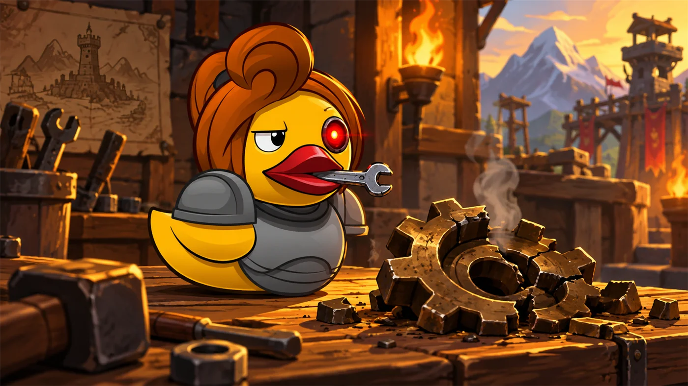
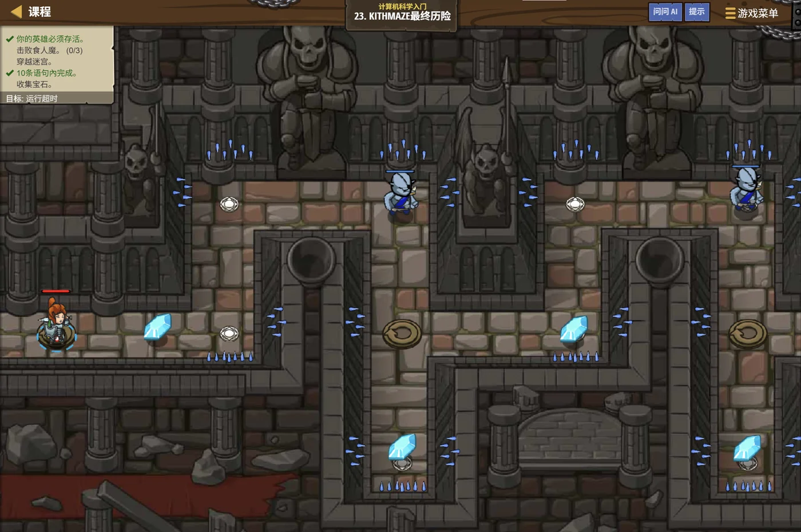

故事：这里是老 Kithman 迷宫的最深处。走廊会拐弯、会重复，
还蹲着三个矮小的食人魔 munchkin——它们个头小，但要打两下才肯倒下。
这一关要把循环和变量合起来用：循环负责一遍遍推进，
变量负责"记住当前看见的那个敌人"。前六个单元学的东西，此刻要同时上场。
扣哒考级 · GESP PYTHON 一级 · 第 7 单元 | 烛火岗哨 CANDLEWATCH OUTPOST
迷雾中的脚印 注释、调试与综合项目
Comments, Debugging & Capstone Project

安雅
红发队长 · 你的旅伴
岗哨外的山道被浓雾吞没了。安雅走在前面，每隔几步就在路边的石头上刻一道记号。
雾里看不清路，所以得留下脚印。她回头看你一眼，写程序也一样—— 代码是写给机器执行的，但注释和排错，是写给'明天回来的你自己'看的。
这是烛火岗哨的最后一课：不是学新语法，而是学会怎么把自己的代码管好。
雾里看不清路，所以得留下脚印。她回头看你一眼，写程序也一样—— 代码是写给机器执行的，但注释和排错，是写给'明天回来的你自己'看的。
这是烛火岗哨的最后一课：不是学新语法，而是学会怎么把自己的代码管好。
安雅 · 红发队长
这一单元没有新语法，但可能是最有用的一课。
学会写注释、看懂报错、动手调试——这三件事决定你能不能在考场上把会做的题真正做出来。
assets/illustrations/py-L1-07-00_foggy_gate.webp
【配图位】黎明前的浓雾中，哨塔外的旧城门只剩模糊轮廓：潮湿的泥地上留着一串发着微光的脚印，一直延伸进雾里；一盏提灯悬在门柱上摇晃，火光勉强照出几步路，英雄举灯俯身辨认脚印的方向。
0 单元导语与目标
Unit Overview
1学完这个单元，你将能……
- 写出单行注释与多行注释
- 分清语法错误、运行错误、逻辑错误
- 用"调试四步法"独立定位并修复问题
- 看懂常见的 Python 报错信息
- 按规范撰写代码（缩进、命名、空格）
- 独立完成一个综合小项目
2对标 GESP 考纲（Python 一级）
- （5）掌握 Python 语言编写的基本格式：缩进、空格、括号、注释等编码规范
- （3）掌握编程文件创建、复制、粘贴、删除、移动程序和调试的基本操作
- （4）掌握编程语言开发环境的使用
- 考核目标：能够独立创建完整的编程文件并运行通过
1 注释
Comments
1.1 两种注释写法
注释（Comment）是写在代码里、给人看而不是给计算机执行的文字。 Python 会把它整个跳过。
| 写法 | 名称 | 例子 | 说明 |
|---|---|---|---|
# | 单行注释 | # 计算总价 | 从 # 开始到这一行末尾，全部被忽略 |
""" """ | 多行注释（三引号） | """ 这里可以写好几行 """ | 一对三引号之间的所有内容都会被忽略 |
注释的两种写法
Python
# 这是一个单行注释，写在一行的开头
price = 3.5 # 也可以写在代码后面，说明这一行在做什么
"""
这是一个多行注释。
它可以写在代码的上方，
用来介绍下面一整段程序是干什么的。
"""
print(price)OUTPUT 3.5 （注释全部被忽略，只有 print 被执行）
别和整除搞混：
# 是注释，// 是整除。
一个是"给人看的说明"，一个是"做除法"，两者毫无关系。
1.2 注释有什么用
图 2（SVG）：注释就像雾天在路边刻下的记号
"注释掉一段代码"是调试利器：
怀疑某几行有问题时，先在它们前面加
# 让它们不执行，看看程序是否恢复正常。
这是最常用的排错手段之一。
安雅 · 红发队长
雾大的时候，我会隔几步就在石头上刻一道记号。不是为了认路——是为了知道自己是刚刚走过，还是已经绕回来了。
调试也是这个意思：让程序"说出"它走到了哪一步，你才知道它在哪儿迷的路。
2 程序会犯的三类错
Three Kinds of Errors
图 3（SVG）：三类错误的区别与排查思路
2.1 语法错误（Syntax Error）
程序还没开始运行就报错，因为它不符合 Python 的语法规则。这是最好修的——报错信息会直接给你行号。
少了一个冒号
Python
a = 5
if a > 3
print("大")SyntaxError expected ':' （第 2 行）
常见语法错误清单：
少冒号、少括号、引号没配对、用了中文标点、缩进不一致、关键字拼错。
它们的共同点是：程序一行都不会执行。
2.2 运行错误（Runtime Error）
程序能开始跑，但跑到某一行时出事了，于是中断。报错信息同样会告诉你是哪一行。
类型不匹配
Python
a = "5" # 这是字符串
print(a + 5) # 字符串和数字不能相加TypeError can only concatenate str (not "int") to str
2.3 逻辑错误（Logic Error）—— 最难查
程序不报任何错，也能跑完，但结果就是不对。 计算机完全照着你的代码执行，只是你的思路写错了。
求平均值却写错了运算符
Python
a = 80
b = 90
print((a + b) // 2) # 想求平均，但写成了整除
c = 85
print((a + b + c) / 2) # 想求三数平均，却只除以了 2没有报错 但结果分别是 85 和 127.5——第二问应该除以 3

扣哒鸭 · 调试官
三种错里，我最喜欢语法错误——它自己会喊救命。
最烦的是逻辑错误：程序跑得好好的，结果一塌糊涂，还一声不吭。
这种错只能靠你自己动脑推演，没人能替你发现。
萨娜 · 森之灵
森林里的树要是长歪了，它不会喊疼，只会一年一年歪下去。逻辑错误就是这么回事——程序不哭不闹，可结果早就偏了。
所以我每隔一阵子就去看它一眼，看它长得对不对。
3 调试四步法
Four-Step Debugging
图 4（SVG）：调试四步法——顺序很重要
最实用的一招：print 大法
当程序不报错、结果却不对时，最有效的办法是在关键位置插入 print，
把中间结果打出来看：
用 print 追踪数据
Python
a = int(input("第一个数："))
b = int(input("第二个数："))
print("调试：a =", a) # ← 临时插进来看看
print("调试：b =", b)
print("调试：a + b =", a + b)
print("结果是：", a + b)思路 如果发现 a 的值和你输入的不一样，问题就在输入那一行
4 报错信息速查
Common Error Messages
Python 的报错信息是英文的，但翻来覆去就那么几种。认识它们，你能省下一半的调试时间：
| 报错名 | 中文含义 | 常见原因 | 怎么修 |
|---|---|---|---|
SyntaxError | 语法错误 | 少冒号、少括号、用了中文标点 | 照报错行号检查符号 |
IndentationError | 缩进错误 | 该缩进的没缩进，或缩进不一致 | 统一改为 4 个空格 |
NameError | 名字未定义 | 变量没赋值就使用，或名字拼错 | 先赋值；检查拼写与大小写 |
TypeError | 类型错误 | 字符串和数字相加、对字符串做算术 | 用 int() / str() 转换类型 |
ValueError | 值错误 | int("abc")——内容不是数字 | 确认输入内容确实是数字 |
ZeroDivisionError | 除零错误 | 除数为 0 | 除数不能为 0 |

扣哒鸭 · 调试官
看到 NameError 就去查变量名；
看到 TypeError 就去查类型转换；
看到 IndentationError 就去看缩进。报错信息不是来骂你的，是来指路的。——虽然我确实是来骂你的。
5 代码规范
Coding Style
考纲要求"掌握缩进、空格、括号、注释等编码规范"。下面是几条一级阶段就该养成的习惯：
| 方面 | 规范做法 | 好处 |
|---|---|---|
| 缩进 | 统一用 4 个空格，不混用 Tab | 结构清楚，不出 IndentationError |
| 运算符空格 | a = 1 + 2（两边各留一个空格） | 更好读 |
| 逗号空格 | print(a, b)（逗号后留一个空格） | 更好读 |
| 命名 | 变量用小写加下划线：max_hp；常量全大写：PI | 一眼看出用途 |
| 空行 | 逻辑相邻的代码分块，块之间空一行 | 分段清晰 |
| 注释 | 复杂的地方写一行注释；# 后留一个空格 | 以后能看懂 |
| 括号 | 成对出现，且用英文半角 | 避免语法错误 |
规范写法示例
Python
# 计算英雄受到伤害后的剩余血量
max_hp = 100
damage = 25
current_hp = max_hp - damage
if current_hp < 30:
print("危险！剩余血量：", current_hp)
else:
print("状态良好，剩余血量：", current_hp)OUTPUT 状态良好，剩余血量： 75
小习惯大收益：养成两个习惯——① 写完一段就按 Ctrl + S；② 每个逻辑块前面写一行注释。
它们不会让你立刻变强，但能让你在考场上少慌一半。
6 综合项目实战
Capstone Project
学了六单元，我们把一级的知识全部用一遍，做一个完整的"岗哨灯油结算器"项目。
项目需求：岗哨每晚要消耗灯油。输入灯的盏数和每盏的耗油量，
计算总耗油量；如果总耗油超过 50 升，就提示"补货"，否则提示"库存充足"。
最后按
xx.xx 升 的格式输出结果。
lamp_oil.py 完整项目
Python
# ===== 岗哨灯油结算器 =====
# 知识点：输入输出、类型转换、运算、分支、f-string
# ---- ① 输入 ----
lamp_count = int(input("请输入灯的盏数："))
oil_per_lamp = float(input("请输入每盏灯的耗油量（升）："))
# ---- ② 处理 ----
total_oil = lamp_count * oil_per_lamp
# ---- ③ 输出 ----
print(f"今晚共需灯油 {total_oil:.2f} 升")
if total_oil > 50:
print("注意：耗油超过 50 升，请及时补货！")
else:
print("库存充足，安心守夜。")运行过程 请输入灯的盏数：12
请输入每盏灯的耗油量（升）：4.5
OUTPUT 今晚共需灯油 54.00 升
注意：耗油超过 50 升，请及时补货！
请输入每盏灯的耗油量（升）：4.5
OUTPUT 今晚共需灯油 54.00 升
注意：耗油超过 50 升，请及时补货！
这个项目用到了什么
| 环节 | 用到的知识 | 来自单元 |
|---|---|---|
| 写注释、分段 | 单行注释、空行分块 | 第 7 单元 |
| 接收输入 | input() + 类型转换 | 第 4 单元 |
| 变量存储 | 变量赋值与命名 | 第 2 单元 |
| 计算总耗油 | 乘法运算 | 第 3 单元 |
| 格式化输出 | f"{x:.2f}" 保留两位小数 | 第 4 单元 |
| 判断是否补货 | if-else 分支 | 第 5 单元 |
这就是一级的全部：
变量装数据、运算符算数据、输入输出通气、分支做判断、循环做重复。
把它们拼在一起，就是一段完整的程序。
assets/illustrations/py-L1-07-01_foggy_trail.webp
【配图位】夜雾笼罩的山道：路边立着一排只有守夜人能读懂的发光路标（象征注释），路标的光柔和地照亮脚下，但不改变道路本身；远处隐约可见岗哨塔尖的青蓝色火光。

assets/illustrations/py-L1-07-02_debug_duck.webp
【配图位】岗哨工作台旁：橙色机械鸭叼着一把小扳手，一只发光单眼盯着冒烟的坏齿轮，表情嫌弃；台面上散着几个拆开的零件与一张写满记号的图纸。
7 代码实战
Level Practice
关卡
Kithmaze 最终历险
进入关卡 →
assets/stages/py-L1-07-stage1_kithmaze_final.webp
【关卡截图位】请把《Kithmaze 最终历险》的游戏画面截图放到此处（放入 assets/stages/ 目录，文件名为 py-L1-07-stage1_kithmaze_final.webp）。
思路：看上面的关卡实况——走廊拐来拐去，还蹲着三个 munchkin。
把一整套动作（走 → 找敌人 → 打两下 → 接着走）装进一个
while True 里，循环就会替你把这条路走完。
重点示例：循环 + 变量的一圈动作
Python
while True:
hero.moveRight()
hero.moveUp()
enemy = hero.findNearestEnemy() # 记住"当前看见的敌人"
hero.attack(enemy)
hero.attack(enemy)
# 后面的移动按同样的节奏接着写……要点 enemy 每转一圈就"换一次主人"，指向当时最近的敌人
有个小陷阱：
要等真的看见敌人时，才去调用
findNearestEnemy()。
如果在没有敌人的位置调用它，变量里装进去的会是一个空值 None，攻击就落空了。
这就是变量的真正价值：
在循环里，
要是没有变量，你就得提前知道每个敌人的位置，那可就难办了。
enemy 这个木箱会被反复换内容——
第一圈装第一个 munchkin，第二圈装第二个……同一行代码，
因为变量在变，每圈打的对象都不一样。要是没有变量，你就得提前知道每个敌人的位置，那可就难办了。
调试提示：如果英雄走错路，先在循环里加一句
去扣哒世界闯这一关 →
print(hero.pos)，把每一步的位置打出来。
这比盯着代码看十分钟有用得多。
8 常见陷阱
Common Pitfalls & Debugging

扣哒鸭 · 调试官
前面六个单元我吼过的错，这一节再给你收个尾。
这五条要是都改掉了，你在考场上至少能多拿十分。
1
把报错信息当成"天书"直接关掉窗口。

扣哒鸭：报错信息的最后一行就是病灶，倒数第二行告诉你行号。
读懂这两行，比重新写一遍快十倍。别一见红字就慌。
做法：先看最后一行（错误类型）→ 再看行号 → 去看那一行
2
一次改十处，然后不知道是哪一处起了作用。

扣哒鸭：一次只改一处，改完立刻跑一遍。
你是在调试，不是在抽奖。改十处还蒙对了，下次你还是不会。
做法：每次只改一个地方，验证通过再改下一个
3
程序不报错，就以为它是对的。

扣哒鸭：不报错 ≠ 正确。
逻辑错误一声不吭，但它会悄悄把你的答案改掉。
用几组特殊数据试一遍——比如输入 0、输入负数、输入边界值。
做法：主动用极端数据自测（0、1、边界值、大数）
4
注释写得太少或太多。要么整段代码没有一个注释，要么每行都写"这是赋值"。

扣哒鸭：注释要写给"看得懂代码但不懂你思路"的人。
写"这一步在做什么"，不用写"这行是赋值"。像路标一样，只在需要转弯的地方插一根。
做法：在关键步骤（输入、处理、输出、判断）前各写一行
5
出错了就推倒重写。写了五十行，一处不对，全部删掉重来。
扣哒鸭：先把可疑的那几行注释掉跑一遍，
看看问题是不是出在那儿。定位问题，比重新写一遍省太多力气。
真要我给一句话总结：会调试的人，写代码只要一半时间。
真要我给一句话总结：会调试的人，写代码只要一半时间。
做法：用
# 注释掉可疑段落，逐步缩小范围9 题目练习
Practice
下面 6 道题中，前 1 道改编自 GESP 真题，后 5 道为原创练习题，覆盖一级的全部知识点。
改编自 2026 年 9 月 · Python 一级 · 第 12 题单选题
下列 Python 代码执行时如输入 35，输出如下所示。横线处应填入的代码是（ ）。
35 34 33 32 31 30 29 28 27 26 25 24 23 22 21 20 19 18 17 16 15 14 13 12 11 10 9 8 7 6 5 4 3 2 1 1 N = int(input()) 2 3 tot = 0 4 for i in range(N): 5 print(__________, end = "") 6 tot = tot + 1 7 if tot % 10 == 0: 8 print()
A.f"{N:3}" B.f"{N - i:3}" C.N - i D.N
查看答案与详解
答案：B。要打印的序列是 N, N-1, N-2, …（即 35, 34, 33…），
第 i 轮打印的正是
A 项只打印 N 本身；C 项缺少宽度对齐；D 项同 A。
本题综合了循环、格式化宽度、取余判断三个考点。
对应单元第 4 单元（格式化）；第 6 单元（循环）。
N - i；同时要求每个数占 3 个字符宽度（对齐美观），
所以要用 f"{N - i:3}"。A 项只打印 N 本身；C 项缺少宽度对齐；D 项同 A。
本题综合了循环、格式化宽度、取余判断三个考点。
对应单元第 4 单元（格式化）；第 6 单元（循环）。
原创练习题单选题
下列 Python 代码运行时，会报哪种错误？（ ）
1 a = "10" 2 b = 5 3 print(a + b)
A.SyntaxError B.TypeError C.NameError D.不报错，输出 15
查看答案与详解
答案：B。
修法：把
对应小节4 报错信息速查。
a 是字符串 "10"，b 是整数 5，
字符串和整数不能相加，会报 TypeError（类型错误）。修法：把
a 转成数字——print(int(a) + b) 就能输出 15。对应小节4 报错信息速查。
原创练习题单选题
下列关于注释的说法，错误的是（ ）。
A.单行注释以
B.一对三引号可以写多行注释
C.注释会被 Python 执行，只是执行速度更快
D.注释能让别人（和以后的自己）更容易读懂代码
# 开头B.一对三引号可以写多行注释
C.注释会被 Python 执行，只是执行速度更快
D.注释能让别人（和以后的自己）更容易读懂代码
查看答案与详解
答案：C。注释完全不会被执行——Python 会直接跳过它们，
它们对程序的运行结果没有任何影响。
对应小节1 注释。
对应小节1 注释。
原创练习题判断题
程序不报任何错误、也能顺利运行结束，说明程序的逻辑一定正确。（ ）
查看答案与详解
答案：错误（×）。这就是逻辑错误——程序不报错，但结果可能是错的。
比如求平均值时把
应对方法：用几组特殊数据（0、负数、边界值）主动验证结果。
对应小节2.3 逻辑错误。
/ 写成了 //，程序照样跑完，结果却不准。应对方法：用几组特殊数据（0、负数、边界值）主动验证结果。
对应小节2.3 逻辑错误。
原创练习题编程题
题目要求：综合练习——输入英雄的血量上限
要求代码中包含注释，并按规范书写。
max_hp 与受到的伤害 damage，
计算剩余血量并输出；如果剩余血量低于 30，额外提示"危险"。要求代码中包含注释，并按规范书写。
查看参考答案与要点
# 计算英雄受到伤害后的剩余血量
max_hp = int(input("请输入血量上限："))
damage = int(input("请输入受到的伤害："))
# 处理：剩余血量 = 上限 - 伤害
current_hp = max_hp - damage
# 输出
print(f"剩余血量：{current_hp}")
if current_hp < 30:
print("危险！请尽快治疗")
要点：
① 两个输入都要 int() 转换；
② 用变量 current_hp 保存中间结果，比重复计算更清楚；
③ 用 f-string 输出，用 if 做单分支判断；
④ 关键步骤前各留一行注释——这就是"规范"。
对应小节5 代码规范；6 综合项目实战。
原创练习题编程题
题目要求：编写"岗哨灯油结算器"——输入灯的盏数与每盏耗油量，计算总耗油并保留两位小数输出；
若总耗油超过 50 升，提示"需要补货"。
查看参考答案与要点
# ① 输入
lamp_count = int(input("请输入灯的盏数："))
oil_per_lamp = float(input("请输入每盏灯的耗油量（升）："))
# ② 处理
total_oil = lamp_count * oil_per_lamp
# ③ 输出
print(f"共需灯油 {total_oil:.2f} 升")
if total_oil > 50:
print("需要补货")
要点：
① 盏数用 int()，耗油量可能是小数用 float()；
② :.2f 表示保留两位小数；
③ 判断"超过 50"用 >，注意题干是"超过"而不是"达到"。
对应小节6 综合项目实战。
10 一级通关小结
Level One Complete
图 7（SVG）：Python 一级七单元知识地图

贺舒曼 · 镜中先知
一级到这里就结束了。你们学的东西听起来很简单——装数据、算一算、收进来、送出去、做个判断、重复几遍、出错就修。
但这七件事，构成了所有程序的地基。二级以后无论学到多复杂的算法， 拆到最后都还是这七件事。
去考场吧。你已经准备好了。
你在岗哨里收获了什么
- 注释——单行用
#，多行用三引号；注释不执行，只给人看。 - 三类错误——语法错误（一行都跑不了）、运行错误（跑到一半崩）、逻辑错误（不报错但结果错）。
- 调试四步法——读报错 → 定位置 → 查数据 → 每次只改一处。
- print 大法——把关键变量的值打出来，是排查逻辑错误最有效的办法。
- 常见报错——SyntaxError、IndentationError、NameError、TypeError、ValueError、ZeroDivisionError。
- 代码规范——4 空格缩进、运算符两侧留空格、见名知意的命名、关键处写注释。
- 综合能力——把变量、运算、输入输出、分支、循环拼成一个完整程序。